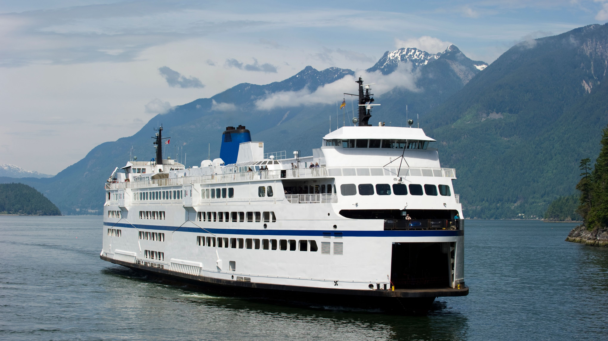

Ferry
Take a scenic ferry ride across the waters and enjoy the peaceful journey through nature's waterways.
Top Ferry Routes in Washington
- Seattle–Bainbridge Island Ferry – ★★★★★
- Anacortes–San Juan Islands Ferry – ★★★★★
- Edmonds–Kingston Ferry – ★★★★☆
- Mukilteo–Clinton Ferry – ★★★★☆